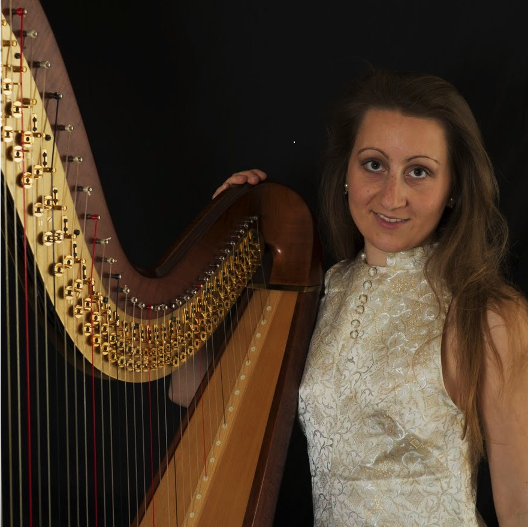
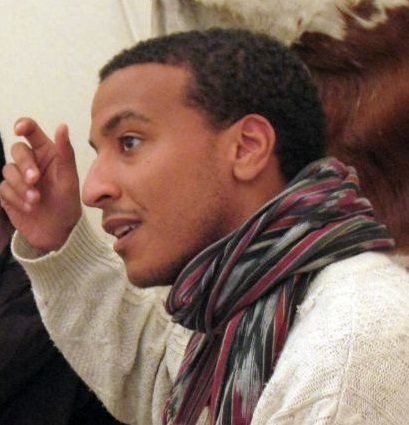
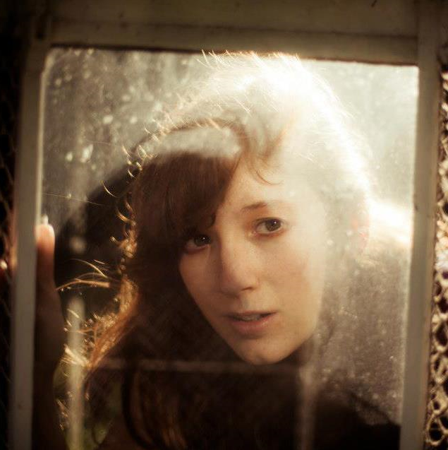
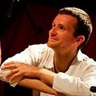

ARTS EnChantés ASBL


Les Artistes

Alisée Frippiat obtient son diplôme de Master en harpe
au Koninklijk Conservatorium Brussel, avec la plus grande
distinction, dans la classe de Jana Bouskova.
Alisée a remporté de nombreux prix, notamment un premier
prix au Concours International de harpe celtique de
Vresse-sur Semois et un premier prix au Concours National
« Dexia Classics 2007», dans la discipline harpe.
Elle est également finaliste du Concours International
de harpe « Félix Godefroid 2010 », dans la catégorie
« soliste ». Elle est lauréate de la Fondation Artistique
Mathilde E. Horlait-Dapsens.
Alisée se produit
régulièrement en concert, en Belgique et à l’étranger,
en soliste et en musique de chambre. Elle a notamment
été invitée à jouer en soliste
au Festival de harpe 2010 de Bruxelles et a collaboré
avec les chœurs d'enfants et de jeunes de La Monnaie en
accompagnant la Choraline dans différentes œuvres pour
chœur et harpe.
Comme harpiste freelance, elle se produit avec
différents orchestres et ensembles de Belgique. Elle a
notamment joué avec l’orchestre de l’opéra de La Monnaie,
l’orchestre de la Musique Royale des Guides, l’ensemble
Sturm und Klang, l’orchestre du XXIème siècle, ainsi que
pour les productions d’Ars Lyrica, sous la direction de Patrick Leterme, pour les comédies musicales
« Le Magicien d’Oz », « La Mélodie du Bonheur » et « Les Parapluies de Cherbourg ».
Membre de l’Académie d’Orchestre du prestigieux Czech
Philharmonic Orchestra, elle s'est produite régulièrement en
concert à Prague avec l’orchestre et a notamment joué sous
la direction de Jiří Belohlávek, Krzysztof Urbanski, Jakub
Hrůša et Manfred Honeck.
En 2015, elle crée l’asbl "Arts EnChantés”, qui organise des événements
dans lesquels se rencontrent différents arts, notamment des stages
pluriartistiques pour enfants et des concerts-contés.
www.aliseefrippiat.be

Christian Chibambo a débuté son parcours de conteur
durant l'été 2008 en rencontrant la conteuse savoyarde
Joëlle Bély qui lui donne le désir de partager
l’enchantement des contes avec autrui. Suite à cette
rencontre, il effectue des formations spécifiques à la
Maison du Conte de Bruxelles pour rapidement commencer
à proposer des spectacles auprès de divers publics.
Chemin faisant, certaines collaborations se tissent avec
d’autres artistes, notamment avec le conteur Monsieur
Hic et la conteuse Emma Germain. En 2012-2013, il a
travaillé à la création du conte-chanté "Le Chant
d’Alyssa" pour la chorale bruxelloise arabophone Zamâan
AWSA.
L’activité de conteur a pour Christian un sens
qui correspond notamment aux perspectives suggérées par
Jean Lerède (cf. "Les troupeaux de l’aurore") et Louis
Jouvet qui ont mis à jour des continuités profondes entre
l’art et le soin de l’âme.
www.christianchibambo.be

Rebecca Van Bogaert commence la flûte traversière à l’âge
de 8 ans à l’académie de Schaerbeek, dans la classe de
Martine Van Puyvelde. En 2007, elle remporte le 1er prix
du concours national « Dexia Classics » dans la discipline
« flûte ». A 17 ans, elle est admise au Koninklijk
Conservatorium Brussel, où elle étudie 3 ans auprès de
Carlos Bruneel (flûte solo de l’Orchestre Symphonique de
la Monnaie) et Frank Hendrickx.
En 2013, elle obtient son
Master en flûte et agrégation au Conservatoire Royal de
Bruxelles, dans la classe de Baudoin Giaux (flûte solo de
l’Orchestre National de Belgique). Elle a participé à de
nombreux stages et master classes, auprès de Myriam
Graulus, Michael Schmid, Matthias Ziegler et Will
Offermans (flûte contemporaine), Wouter Vandenabeele et
Moufadhel Adhoum (musique du monde), Mia et Mikael Marin
(musique suédoise), Toon Van Mierlo et Pascale Rubens
(folk) et Rémi Decker (flûte irlandaise).
Elle joue actuellement dans le groupe folk Orbál (pour lequel elle
compose également des morceaux), le duo Aviraï avec la
harpiste Alisée Frippiat (musique classique et musique
du monde) et le duo Thiklé avec le guitariste Mike Floris
(country, rock, trad). Elle se produit également
régulièrement dans les Grottes de Han dans le cadre de
visites « Han-musique ».

Vincent Wilkin a appris la musique en Afrique
(Sénégal, Mali, Burkina-Faso), entièrement novice, jouant
dans des formations après seulement six mois d'initiation.
Sa chance a été d'être exposé très tôt à des musiciens
confirmés et talentueux (Sadio Cissokho, Djelymady Sissoko,
Issa Ouattara, Daouda Dembélé, ...), qui lui ont offert
une place parmi eux.
C'est ensuite la musique indienne
qui l'a influencé le plus, en particulier la musique
classique du sud de l'Inde, qu'il pratique depuis 2008
guidé notamment par le Dr P. V. Bose. Cette musique a été
pour Vincent la porte d'entrée pour comprendre et
apprécier les musique du moyen orient, comme le mugham
(Azerbaijan).
La musique occidentale est entrée
dernièrement dans ses influences avec le folk, et la
musique classique, qu'il travaille sur la kora depuis
peu. Créer un pont entre ces différents points de vue,
en gardant leur individualité, est le défi qu'il se lance
chaque jour pour exprimer par la musique ce qui le
transporte.